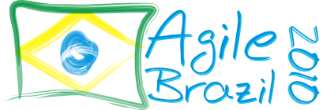

Curriculum Vitae
Employment
- 2023-...: Associate Professor
Department of Computer Science - North Carolina State University (NC State), USA
- 2021-2023: Universitätsassistent (University Assistant / Senior Researcher)
Institute of Software Systems Engineering - Johannes Kepler Universität Linz (JKU), Austria
- 2019-2023: Postdoctoral Researcher
Informatics Department - Pontifical Catholic University of Rio de Janeiro (PUC-Rio), Brazil
- 2013-2021: Assistant/Associate Professor (Civil Servant)
Federal University of Technology - Paraná (UTFPR-Toledo), Brazil
- 2007-2012: Partial-Time Lecturer
Faculdade Sul Brasil, Brazil
- 2009-2009: Partial-Time Lecturer
Secretaria de Estado da Educação do Paraná - Toledo, Brazil
- 2006-2010: Full-stack Web Developer
Faculdade Sul Brasil, Brazil
Education
-
Ph.D. in Computer Science (2012 - 2017)
Informatics Department (DINF), Federal University of Paraná (UFPR), Brazil
Visiting Student: Institute for Software Systems Engineering (ISSE) at Johannes Kepler University (JKU), Austria
Scholarship: Coordination for the Improvement of Higher Education Personnel (CAPES)
Supervisor: Silvia Regina Vergilio / Co-supervisor: Roberto Erick Lopez-Herrejon
-
M.Sc. in Informatics (2010 - 2012)
Informatics Department (DINF), Federal University of Paraná (UFPR), Brazil
Scholarship: Coordination for the Improvement of Higher Education Personnel (CAPES)
Supervisor: Silvia Regina Vergilio
-
Graduate Specialization in Teaching in Higher Education (2009 - 2010)
Faculdade Sul Brasil (FASUL), Brazil
Supervisor: Carlos Norberto Berger
-
Graduate Specialization in Automation and Industrial Networks (2007 - 2009)
Faculdade de Tecnologia Senai Florianópolis, Brazil
Supervisor: Claudia Dell'Agnolo Petry
-
B.Sc. in Information Systems (2003 - 2006)
Faculdade Sul Brasil (FASUL), Brazil
Supervisor: Fabio Alexandre Spanhol
Grants and Funding
- 2024-2027: Brazilian National Council for Scientific and Technological Development (CNPq)
Call: CNPq/MCTI - 10/2023 - Faixa A
PIs: Thelma Colanzi (UEM/Brazil)
Role: Collaborator
Project Title: Intelligent Support to Software Industry for the Modernization of Legacy Systems
Funding: BRL 82,500.00
- 2023-2024: Brazilian National Council for Scientific and Technological Development (CNPq), Ministry of Science and Technology (MCTI), and National Fund for Scientific and Technological Development (FNDCT)
Call: CNPq/SEMPI/MCTI/FNDCT - 54/2022 - Faixa B
PIs: Glauco Miranda (UTFPR/Brazil) and Pedro Luiz de Paula Filho (UTFPR/Brazil)
Collaborators: Edicléia Aparecida Bonini e Silva (UTFPR), Gloria Patricia López Sepúlveda (UTFPR), Arlete Teresinha Beuren (UTFPR), Andreine Aline Roos (UTFPR), Claudio Biazus (UTFPR), Domingos Tabajara de Oliveira Martins (UFMT/Brazil), Wesley K. G. Assunção (JKU/Austria), Pedro João Soares Rodrigues (IPC/Portugal), Mateus Daniel Almeida Mendes (IPC/Portugal)
Project Title: Intelligent System for Indoor Production of Bioactives for Phytomedicine
Funding: BRL 700,877.00
- 2020-2023: Carlos Chagas Filho Research Support Foundation in the State of Rio de Janeiro (FAPERJ)
Call: PDR10-FAPERJ-2020
Supervisor: Alessandro Garcia | PUC-Rio, Rio de Janerio, Brazil
Project Title: 'Microservicification' of Legacy Systems
Funding: BRL 360,000.00
- 2019-2021: Brazilian National Council for Scientific and Technological Development (CNPq)
Call: Universal MCTIC/CNPq 28/2018
ID: 408356/2018-9
Project Title: Software Product Line Extraction from Product Variants in Small and Medium-sized Software Enterprises
Funding: BRL 20,000.00
- 2019-2020: State of Parana Research Foundation (Araucária Foundation)
Call: Young Researchers - PPP (FA/CNPq) - CP 20/18
ID: 51435
Project Title: Extraction of Software Product Lines from Legacy Systems in Small and Medium-Sized Enterprises
Funding: BRL 50,000.00
- Total: BRL 1.21m (EUR ~227k, USD ~245k)
Awards
- IEEE Computer Society TCSE Distinguished Paper Award - 31st IEEE International Conference on Software Analysis, Evolution and Reengineering (SANER 2024).
Title: Exploring Dependencies Among Inconsistencies to Enhance the Consistency Maintenance of Models.
Authors: Luciano Marchezan, Wesley K. G. Assunção, Edvin Herac, Saad Shafiq, and Alexander Egyed.
- ACM SIGSOFT Distinguished Paper Award - 20th International Conference on Mining Software Repositories (MSR 2023).
Title: The ABLoTS Approach for Bug Localization: is it replicable and generalizable?
Authors: Feifei Niu, Christoph Mayr-Dorn, Wesley K. G. Assunção, LiGuo Huang, Jidong Ge, Bin Luo, and Alexander Egyed.
- Best Paper Award - 27th ACM International Systems and Software Product Line Conference (SPLC 2023).
Title: Feature-oriented Test Case Selection during Evolution of High-Configurable Systems
Authors: Willian Douglas Ferrari Mendonça, Wesley K. G. Assunção, and Silvia Regina Vergilio.
- 1st-place Master Thesis Award - Software Quality Thesis and Dissertation Contest - 22nd Brazilian Software Quality Symposium (SBQS 2023).
Title: Variability Debt: A Multi-method Study
Authors: Daniele Wolfart, Wesley K. G. Assunção (supervisor), and Jabier Martinez (co-supervisor).
- Best Paper Award - 25th International Conference on Model Driven Engineering Languages and Systems (MODELS 2022) - Practice & Innovation Track.
Title: Reactive Links Across Multi-Domain Engineering Models
Authors: Cosmina-Cristina Rațiu, Wesley K. G. Assunção, Rainer Haas, and Alexander Egyed.
- Best Paper Award - International Conference on Software and Systems Processes (ICSSP 2022) + International Conference on Global Software Engineering (ICGSE 2022).
Title: Change-Oriented Repair Propagation
Authors: Luciano Marchezan, Wesley K. G. Assunção, Roland Kretschmer, and Alexander Egyed.
- Distinguished Paper Award (2nd Place) - 15th Brazilian Symposium on Software Components; Architectures; and Reuse (SBCARS 2021).
Title: Do Critical Components Smell Bad? An Empirical Study with Component-based Software Product Lines
Authors: Anderson Uchôa, Wesley K. G. Assunção, and Alessandro Garcia.
- Best Paper Award - 4th Southern Brazilian School on Software Engineering (ERES 2020) - Graduate track.
Title: Towards a Process for Migrating Legacy Systems into Microservices Architectural Style
Authors: Daniele Wolfart, Ederson Schmeing, Gustavo C.L. Geraldino, Guilherme L.D. Villaca, Diogo do N. Paza, Diogo C.P. Domingos, Wesley K.G. Assunção, Ivonei F. da Silva, and Victor F.A. Santander.
- Best Paper Award - 2nd Southern Brazilian School on Software Engineering (ERES 2018) - Industry track.
Title: Reúso de Software: Do Oportunista ao Sistemático (in Portuguese)
Authors: Wesley K. G. Assunção, Willian D. F. Mendonça, and Silvia R. Vergilio
- Best Paper Award Nominee - Genetic and Evolutionary Computation Conference (GECCO 2015) - Search-Based Software Engineering and Self-* Search.
Title: Extracting Variability-Safe Feature Models from Source Code Dependencies in System Variants
Authors: Wesley K.G. Assunção, Roberto Lopez-Herrejon, Lukas Linsbauer, Silvia Vergilio, and Alexander Egyed.
- Best Paper Award Nominee - Latin-American Workshop on Aspect-Oriented Software Development (LA-WASP 2012).
Title: Evaluating Different Strategies for Integration Testing of Aspect-Oriented Programs
Authors: Wesley K.G. Assunção, Thelma Colanzi, Silvia Vergilio, and Aurora Ramirez Pozo.
- Best Paper Award - Latin-American Workshop on Aspect-Oriented Software Development (LA-WASP 2011).
Title: Generating Integration Test Orders for Aspect-Oriented Software with Multiobjective Algorithms
Authors: Thelma Colanzi, Wesley K.G. Assunção, Silvia Vergilio, and Aurora Ramirez Pozo.
Service
- Journal of Systems and Software (JSS) Special Issue on Managing Variability in Complex Software- Intensive Systems - Guest editor [Call for Papers]
- 32nd International Conference on the Foundations of Software Engineering (FSE 2024) - New Faculty Mentoring Co-Chair
- 1st International Workshop on Reverse Variability Engineering and Evolution of Software-Intensive Systems (Re:Volution) in conjunction with SPLC2024 - Organizer
- 26th International Systems and Software Product Line Conference (SPLC 2022) - Program Co-Chair
- 1st International Workshop on Technical Debt for Variability-intensive Systems (TD4ViS 2022) in conjunction with SPLC2022 - Organizer
- 2nd International Workshop on Variability Management for Modern Technologies (VM4ModernTech 2022) in conjunction with SPLC2022 - Organizer
- 10th International Workshop on Reverse Variability Engineering (REVE 2022) in conjunction with SPLC2022 - Organizer
- 15th Innovations in Software Engineering Conference (ISEC 2022) - Publicity Co-Chair
- 6th Brazilian Symposium on Systematic and Automated Software Testing (SAST 2021) - Program Co-Chair
- 13th International Symposium on Search-Based Software Engineering (SSBSE 2021) - Proceeding Chair
- 1st International Workshop on Variability Management for Modern Technologies (VM4ModernTech 2021) in conjunction with SPLC2021 - Organizer
- 9th International Workshop on Reverse Variability Engineering (REVE 2021) in conjunction with SPLC2021 - Organizer
- 8th International Workshop on Reverse Variability Engineering (REVE 2020) in conjunction with SPLC2020 - Organizer
- 24th International Systems and Software Product Line Conference (SPLC 2020) - Journal First Co-Chair
- 12th International Symposium on Search-Based Software Engineering (SSBSE 2020) - Challenge track Co-Chair
- 23rd International Systems and Software Product Line Conference (SPLC 2019) - Publicity and Social Media Co-Chair
- 10th International Symposium on Search-Based Software Engineering (SSBSE 2018) - Challenge track Co-Chair
- 9th Brazilian Workshop on Search-Based Software Engineering (WESB 2018) - Organizer
Journal Reviewer
- IEEE Transactions on Software Engineering (TSE)
- ACM Transactions on Software Engineering and Methodology (TOSEM)
- Empirical Software Engineering (EMSE)
- Journal of Systems and Software (JSS)
- Information and Software Technology (IST)
- Automated Software Engineering Journal (ASE)
- IEEE Software
- Software Testing, Verification and Reliability (STVR)
- Software and Systems Modeling (SOSYM)
- Software: Practice and Experience (SPE)
- Information Sciences (INS)
- Journal of Software Engineering Research and Development (JSERD)
- Science of Computer Programming
- IET Software
Program Committee
- 46th IEEE/ACM International Conference on Software Engineering (ICSE 2024) - Technical Track, Demonstrations Track
- 39th IEEE/ACM International Conference on Automated Software Engineering (ASE 2024) - Research Track
- 31st IEEE International Conference on Software Analysis, Evolution and Reengineering (SANER 2024) - Research Track
- 21st International Conference on Mining Software Repositories (MSR 2024) - Technical Track
- 28th International Systems and Software Product Line Conference (SPLC 2024) - Research track, Challenge track
- 32nd ACM International Conference on the Foundations of Software Engineering (FSE 2024) - Demonstrations Track
- 40th International Conference on Software Maintenance and Evolution (ICSME 2024) - NIER Track
- 18th International Working Conference on Variability Modelling of Software-Intensive Systems (VaMoS 2024)
- 3rd International Conference on AI Engineering – Software Engineering for AI (CAIN 2024)
- 7th Workshop on Validation, Analysis and Evolution of Software Tests (VST 2024)
- 38th Brazilian Symposium on Software Engineering (SBES 2024) - Research track
- 20th International Conference on Mining Software Repositories (MSR 2023) - Technical Track
- 39th IEEE International Conference on Software Maintenance and Evolution (ICSME 2023) - Artifact Evaluation Track and ROSE Festival
- 27th International Systems and Software Product Line Conference (SPLC 2023) - Research track, Challenge track
- 37th Brazilian Symposium on Software Engineering (SBES 2023) - Research track
- 23rd IEEE International Working Conference on Source Code Analysis and Manipulation (SCAM 2023) - Replication and Negative Results Track
- 8th Brazilian Symposium on Systematic and Automated Software Testing (SAST 2023) - Research track
- 6th International Workshop on Variability and Evolution of Software-intensive Systems (VariVolution 2023) - Research track
- 15th Symposium on Search-Based Software Engineering (SSBSE 2023) - Challenge Track
- 19th International Conference on Mining Software Repositories (MSR 2022) - Technical Track
- 38th IEEE International Conference on Software Maintenance and Evolution (ICSME 2022) - Tool Demo track
- 37th IEEE/ACM International Conference on Automated Software Engineering (ASE 2022) - Artifact Evaluation track
- 16th International Working Conference on Variability Modelling of Software-Intensive Systems (VaMoS 2022) - Research track
- 31st ACM SIGSOFT International Symposium on Software Testing and Analysis (ISSTA 2022) - Artifact Evaluation track
- 36th Brazilian Symposium on Software Engineering (SBES 2022) - Research track
- 7th Brazilian Symposium on Systematic and Automated Software Testing (SAST 2022) - Research track
- 21st Brazilian Software Quality Symposium (SBQS 2022) - Research track, Thesis and Dissertation Contest
- 14th Symposium on Search-Based Software Engineering (SSBSE 2022) - Challenge track
- 6th Southern Brazilian School on Software Engineering (ERES 2022) - Graduate track
- 43rd International Conference on Software Engineering (ICSE 2021) - ACM Student Research Competition Judge
- 36th IEEE/ACM International Conference on Automated Software Engineering (ASE 2021) - Artifact Evaluation track
- 37th International Conference on Software Maintenance and Evolution (ICSME 2021) - Tool Demo track
- 35th Brazilian Symposium on Software Engineering (SBES 2021) - Research track
- 2nd Undergraduate Research on Software Engineering Competition (CTIC-ES 2021) part of the SBES 2021
- 20th Brazilian Software Quality Symposium (SBQS 2021) - Research track, Thesis and Dissertation Contest
- 25th International Systems and Software Product Line Conference (SPLC 2021) - Challenge track, Journal First Track
- 15th International Working Conference on Variability Modelling of Software-Intensive Systems (VaMoS 2021) - Research track
- 28th International Conference on Software Analysis, Evolution, and Reengineering (SANER 2021) - Tool track
- 4th International Workshop on Variability and Evolution of Software-Intensive Systems (VariVolution 2021) - Research track
- 5th Southern Brazilian School on Software Engineering (ERES 2021) - Graduate track
- 2nd International Workshop DevOps at MODELS (DevOps@MODELS 2021)
- 24th International Systems and Software Product Line Conference (SPLC 2020) - Research track, Challenge track
- 12th Symposium on Search-Based Software Engineering (SSBSE 2020) - Research track
- 5th Brazilian Symposium on Systematic and Automated Software Testing (SAST 2020) - Research track
- 34th Brazilian Symposium on Software Engineering (SBES 2020) - Innovative Ideas and Emerging Results track
- 19th Brazilian Software Quality Symposium (SBQS 2020) - Research track
- 8th International Workshop on Reverse Variability Engineering (REVE 2020) - Research track
- 3rd International Workshop on Variability and Evolution of Software-Intensive Systems (VariVolution 2020) - Research track
- 4th Southern Brazilian School on Software Engineering (ERES 2020) - Graduate track, Undergraduate track
- 11th Computer on the Beach (COTB 2020) - Research track
- 11th Symposium on Search-Based Software Engineering (SSBSE 2019) - Research track
- 23nd International Systems and Software Product Line Conference (SPLC 2019) - Challenge track
- 4th Brazilian Symposium on Systematic and Automated Software Testing (SAST 2019) - Research track
- 10th Brazilian Workshop on Search-Based Software Engineering (WESB 2019) - Research track
- 10th Computer on the Beach (COTB 2019) - Research track
- 3rd Southern Brazilian School on Software Engineering (ERES 2019) - Graduate track
- 10th Symposium on Search-Based Software Engineering (SSBSE 2018) - Challenge track
- 22nd International Systems and Software Product Line Conference (SPLC 2018) - Challenge track
- 3rd Brazilian Symposium on Systematic and Automated Software Testing (SAST 2018) - Research track
- 9th Brazilian Workshop on Search-Based Software Engineering (WESB 2018) - Research track
- 9th Computer on the Beach (COTB 2018) - Research track
- 8th Brazilian Workshop on Search-Based Software Engineering (WESB 2017) - Research track
Conference and Journal Subreviewer
- 34th Brazilian Symposium on Software Engineering (SBES 2020) - Research track
- 27th ACM Joint European Software Engineering Conference and Symposium on the Foundations of Software Engineering (ESEC/FSE 2019)
- 9th International Symposium on Search Based Software Engineering (SSBSE 2017)
- IEEE Computational Intelligence Magazine Special Issue on "Search Based Software Engineering" (CIMSBSE 2016)
- 32nd International Conference on Software Maintenance and Evolution (ICSME 2016)
- 28th International Conference on Software Engineering and Knowledge Engineering (SEKE 2016)
- 7th Brazilian Workshop on Search-Based Software Engineering (WESB 2016)
- 7th International Symposium on Search Based Software Engineering - SBSE Challenge track (SSBSE 2015)
- 27th International Conference on Software Engineering and Knowledge Engineering (SEKE 2015)
- 26th International Conference on Software Engineering and Knowledge Engineering (SEKE 2014)
Logo Design
- Winner of competition to design the for The Brazilian Conference on Agile Methods (Agile Brazil 2010)
